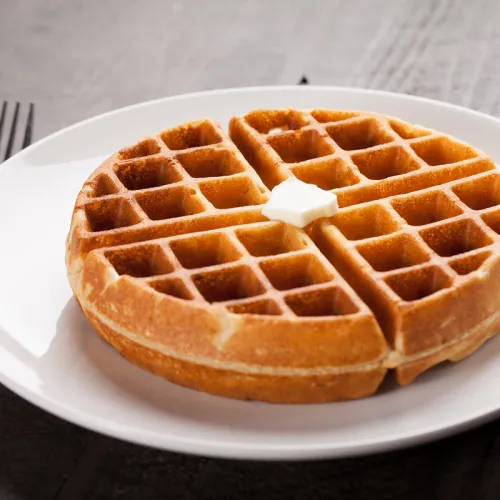

Instrucciones
- Mezclar en un bowl grande todos los ingredientes secos.
- Batir en otro recipiente los ingredientes húmedos.
- Volcar los líquidos sobre los secos y mezclar suavemente hasta lograr una masa homogénea sin grumos.
- Calentar la waflera y engrasar las placas con un poco de manteca o spray de cocina.
- Verter una porción de masa en el centro y cocinar entre 4 y 5 minutos, hasta que estén dorados.

 © 2026 Francisco Tato
© 2026 Francisco Tato